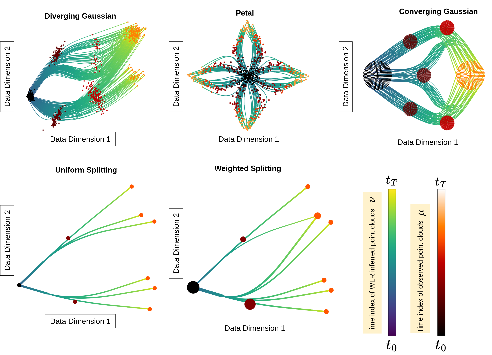
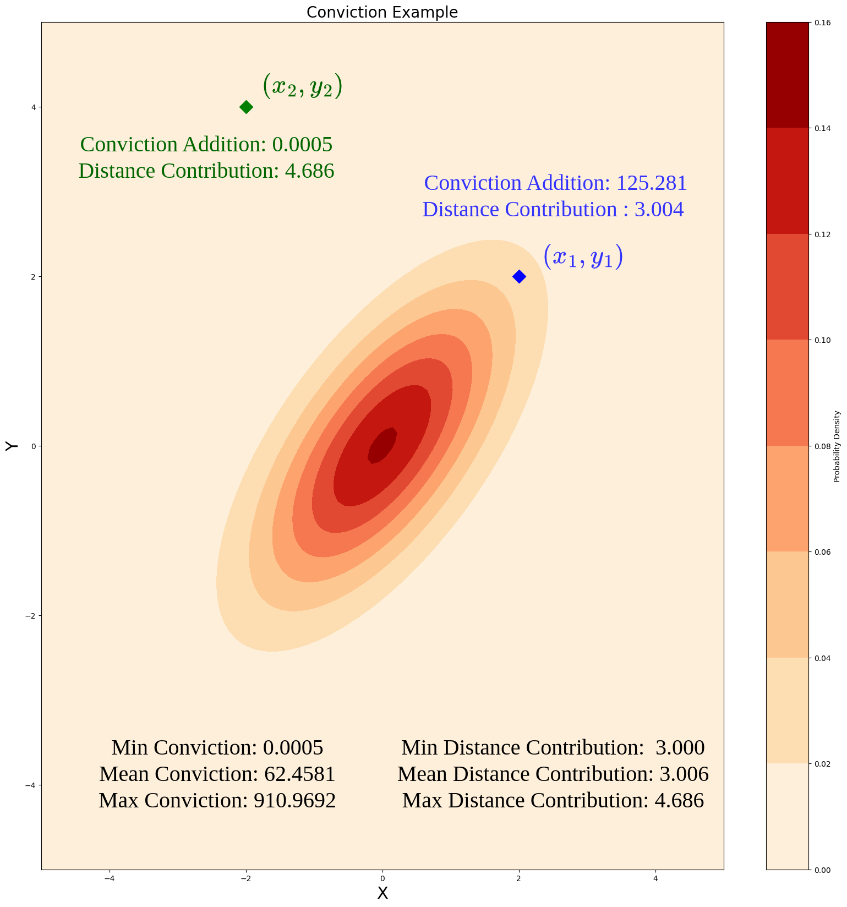
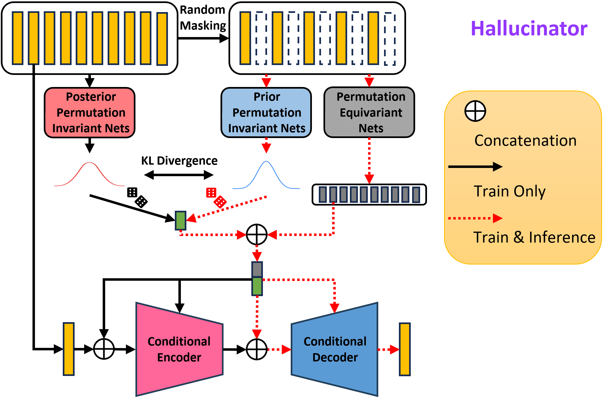
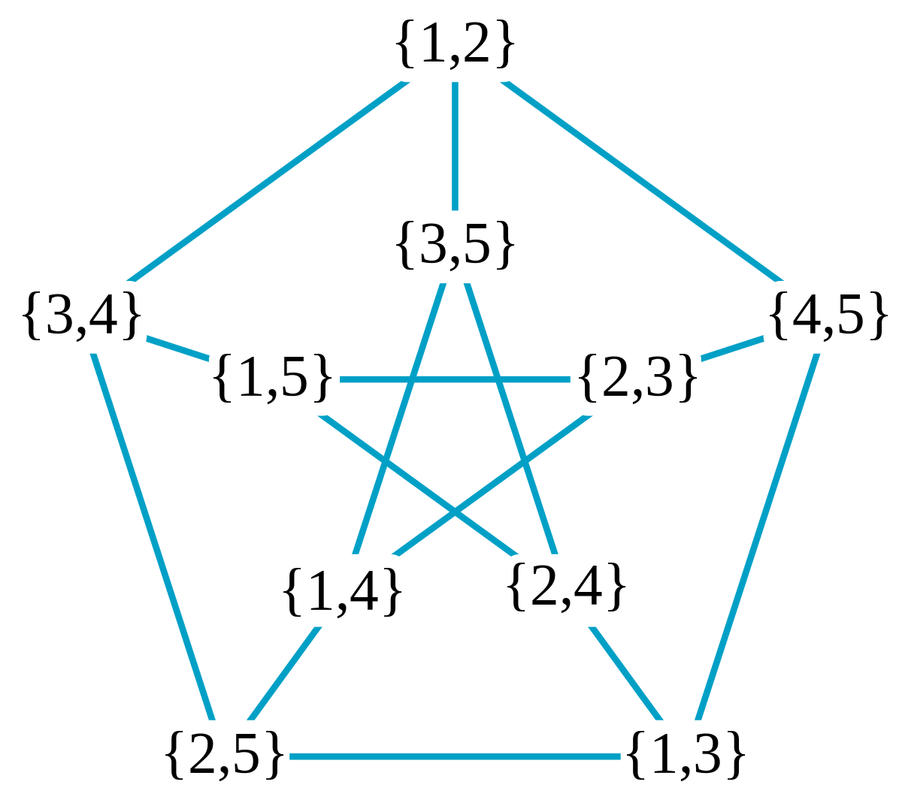

|
I am currently a PhD student in the Department of Computer Science at University of North Carolina, Chapel Hill. I am extremely fortunate to be advised by Prof. Harlin Lee and Prof. Caroline Moosmueller. I am also a member of Geometric Data Analysis @ UNC. Broadly, my research interests revolve around problems in Optimal Transport and Machine Learning. Prior to joining my PhD, I graduated with a double major in Mathematics and Computer Science from University of Maryland, College Park followed by a Master's in Computer Science, also from UMD. Fun Fact: I have an Erdos number of 3. |

|
|
|
|
2025 |
|
|  |
Amartya Banerjee, Harlin Lee, Nir Sharon, Caroline Moosmüller. AISTATS, 2025
pdf
| abstract
| bibtex
| Code
| SIAM News
Capturing data from dynamic processes through cross-sectional measurements is seen in many fields, such as computational biology. Trajectory inference deals with the challenge of reconstructing continuous processes from such observations. In this work, we propose methods for B-spline approximation and interpolation of point clouds through consecutive averaging that is intrinsic to the Wasserstein space. Combining subdivision schemes with optimal transportbased geodesic, our methods carry out trajectory inference at a chosen level of precision and smoothness, and can automatically handle scenarios where particles undergo division over time. We prove linear convergence rates and rigorously evaluate our method on cell data characterized by bifurcations, merges, and trajectory splitting scenarios like supercells, comparing its performance against state-of-the-art trajectory inference and interpolation methods. The results not only underscore the effectiveness of our method in inferring trajectories but also highlight the benefit of performing interpolation and approximation that respect the inherent geometric properties of the data.
@inproceedings{
banerjee2025efficient,
title={Efficient Trajectory Inference in Wasserstein Space Using Consecutive Averaging},
author={Amartya Banerjee and Harlin Lee and Nir Sharon and Caroline Moosm{\"u}ller},
booktitle={The 28th International Conference on Artificial Intelligence and Statistics},
year={2025},
url={https://openreview.net/forum?id=ucyKTM7lO5}
}
|
2024 |
|
|  |
Amartya Banerjee, Christopher J. Hazard, Jacob Beel, Cade Mack, Jack Xia, Michael Resnick, Will Goddin. arXiv, 2024
pdf
| abstract
| bibtex
| Code
Nonparametric learning is a fundamental concept in machine learning that aims to capture complex patterns and relationships in data without making strong assumptions about the underlying data distribution. Owing to simplicity and familiarity, one of the most well-known algorithms under this paradigm is the k-nearest neighbors (k-NN) algorithm. Driven by the usage of machine learning in safety-critical applications, in this work, we shed new light on the traditional nearest neighbors algorithm from the perspective of information theory and propose a robust and interpretable framework for tasks such as classification, regression, density estimation, and anomaly detection using a single model. We can determine data point weights as well as feature contributions by calculating the conditional entropy for adding a feature without the need for explicit model training. This allows us to compute feature contributions by providing detailed data point influence weights with perfect attribution and can be used to query counterfactuals. Instead of using a traditional distance measure which needs to be scaled and contextualized, we use a novel formulation of surprisal (amount of information required to explain the difference between the observed and expected result). Finally, our work showcases the architecture's versatility by achieving state-of-the-art results in classification and anomaly detection, while also attaining competitive results for regression across a statistically significant number of datasets.
@misc{banerjee2024surprisal,
title={Surprisal Driven $k$-NN for Robust and Interpretable Nonparametric Learning},
author={Amartya Banerjee and Christopher J. Hazard and Jacob Beel and Cade Mack and Jack Xia and Michael Resnick and Will Goddin},
year={2024},
eprint={2311.10246},
archivePrefix={arXiv},
primaryClass={cs.LG}
}
|
|  |
Siyuan Shan, Yang Li, Amartya Banerjee, Junier B. Oliva. AAAI, 2024
pdf
| abstract
| bibtex
| Code
Voice conversion (VC) aims at altering a person's voice to make it sound similar to the voice of another person while preserving linguistic content. Existing methods suffer from a dilemma between content intelligibility and speaker similarity; i.e., methods with higher intelligibility usually have a lower speaker similarity, while methods with higher speaker similarity usually require plenty of target speaker voice data to achieve high intelligibility. In this work, we propose a novel method Phoneme Hallucinator that achieves the best of both worlds. Phoneme Hallucinator is a one-shot VC model; it adopts a novel model to hallucinate diversified and high-fidelity target speaker phonemes based just on a short target speaker voice (e.g. 3 seconds). The hallucinated phonemes are then exploited to perform neighbor-based voice conversion. Our model is a text-free, any-to-any VC model that requires no text annotations and supports conversion to any unseen speaker. Quantitative and qualitative evaluations show that Phoneme Hallucinator outperforms existing VC methods for both intelligibility and speaker similarity.
@article{DBLP:journals/corr/abs-2308-06382,
author = {Siyuan Shan and
Yang Li and
Amartya Banerjee and
Junier B. Oliva},
title = {Phoneme Hallucinator: One-shot Voice Conversion via Set Expansion},
journal = {CoRR},
volume = {abs/2308.06382},
year = {2023},
url = {https://doi.org/10.48550/arXiv.2308.06382},
doi = {10.48550/ARXIV.2308.06382},
eprinttype = {arXiv},
eprint = {2308.06382},
keywords = {Voice Conversion, Set Expansion}
}
|
2021 |
|
|  |
Davin Park, Anthony Ostuni, Nathan Hayes, Amartya Banerjee, Tanay Wakhare, Wiseley Wong, and Sebastian Cioabã. Discrete Mathematics, 2021
pdf
| abstract
| bibtex
| Code
The toughness t(G) of a graph G is a measure of its connectivity that is closely related to Hamiltonicity. Xiaofeng Gu, confirming a longstanding conjecture of Brouwer, recently proved the lower bound t(G) ≥ ℓ/λ−1 on the toughness of any connected ℓ-regular graph, where λ is the largest nontrivial absolute eigenvalue of the adjacency matrix. ...
@article{PARK2021112484,
title = {The toughness of Kneser graphs},
journal = {Discrete Mathematics},
volume = {344},
number = {9},
pages = {112484},
year = {2021},
issn = {0012-365X},
doi = {https://doi.org/10.1016/j.disc.2021.112484},
author = {Davin Park and Anthony Ostuni and Nathan Hayes and
Amartya Banerjee and Tanay Wakhare and Wiseley Wong
and Sebastian Cioabă},
keywords = {Kneser graph, Graph connectivity, Toughness},
}
|
|
|